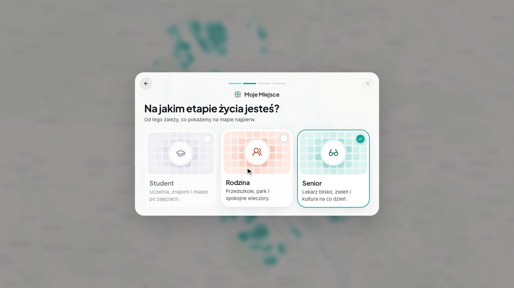
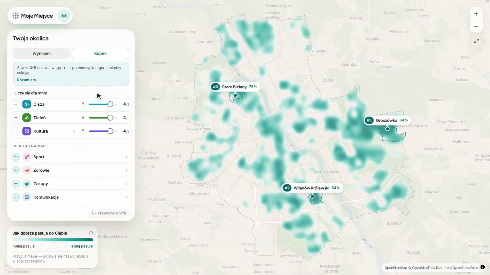
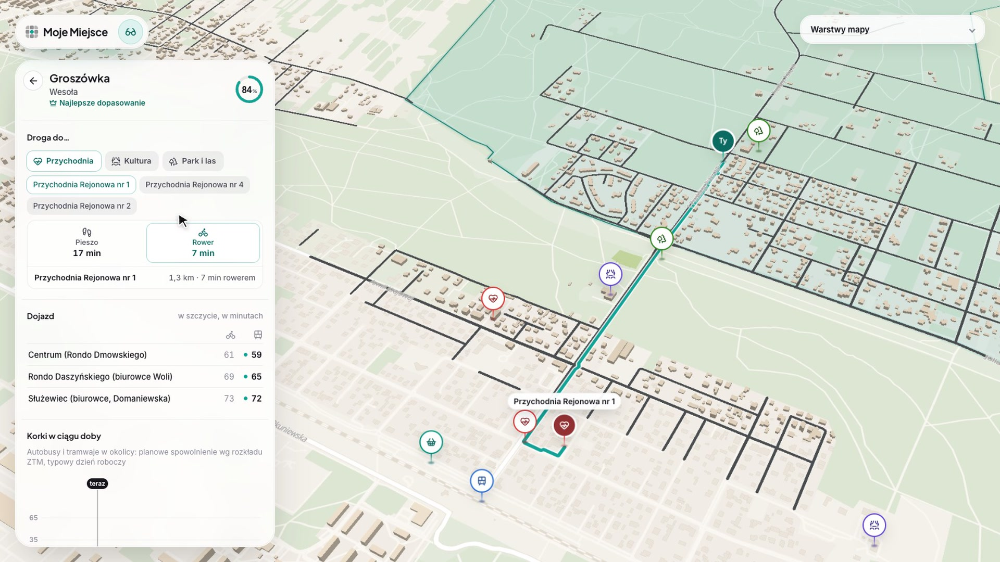
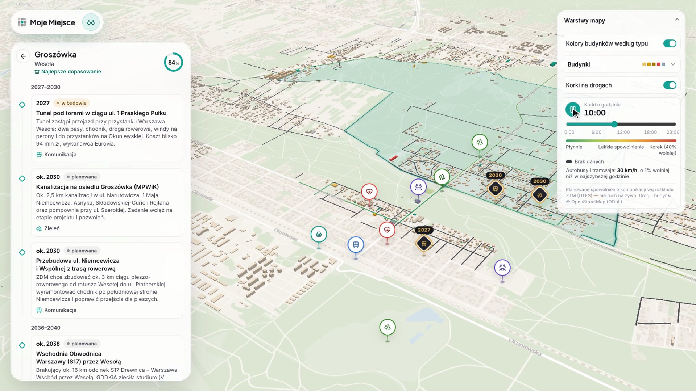

Cześć, jesteśmy AI All In. Pokażemy wam Moje Miejsce — aplikację, która pomaga wybrać, gdzie zamieszkać w Warszawie, jeszcze zanim zacznie się przeglądać ogłoszenia. Przyda się studentowi, rodzinie i seniorowi.
01 Problem
Ogłoszenie pokazuje mieszkanie. Nie pokazuje życia wokół niego.
Decyzja na lata
Przedszkole dziś, szkoła za pięć lat, dojazd do pracy każdego dnia. Mieszkanie da się wyremontować, okolicy — nie.
Dane istnieją, ale są rozproszone
Portal miasta, rejestr cen, mapy hałasu, rozkłady ZTM, OpenStreetMap. Dziesiątki formatów i żadnego spójnego obrazu całości.
Portale milczą o okolicy
Metraż, cena, piętro. O ciszy, zieleni, szkołach i dojazdach dowiadujesz się dopiero po przeprowadzce.
Moje Miejsce2 / 8
Szukając mieszkania, przeglądamy setki ogłoszeń. Każde mówi o metrażu i cenie, ale żadne nie mówi, jak się tam żyje. A to decyzja na lata: przedszkole, szkoła, codzienny dojazd. Potrzebne dane istnieją — portal otwartych danych, rejestr cen, mapy hałasu, rozkłady ZTM — ale są rozproszone i nikt nie łączy ich w jeden obraz zrozumiały dla zwykłego mieszkańca.
02 Rozwiązanie
Najpierw miejsce do życia, potem mieszkanie.

1
Profil w 30 sekund
Trzy pytania, bez logowania: etap życia, codzienne priorytety, wynajem lub kupno.

2
Mapa dopasowania
143 osiedla ocenione według Twoich priorytetów. Przesuwasz suwak, a mapa przelicza się na żywo.

3
Osiedle z bliska
Widok 3D, trasy do przychodni i szkoły, dojazd w szczycie, ceny transakcyjne i inwestycje miasta do 2045 r.
Moje Miejsce3 / 8
Dlatego odwracamy kolejność: najpierw okolica, potem mieszkanie. Trzy kroki. Krótki profil — bez logowania. Mapa, która ocenia 143 warszawskie osiedla według twoich priorytetów. I widok osiedla z bliska, z konkretnymi liczbami. Zobaczcie, jak to działa. [włącz wideo]
Spacja — odtwórz / pauza
Film trwa 2:25, ma muzykę, ale nie ma lektora — podpisy na ekranie mówią, co widać, więc można milczeć albo krótko komentować:
profil seniora w trzech krokach → mapa 143 osiedli → wyłączamy ciszę i zieleń, dokładamy gastronomię i top 3 zamienia się w Śródmieście → „Przywróć profil” i wraca Groszówka → panel Groszówki: miejsca, trasa do przychodni, dojazd w szczycie, korki, ceny → oś czasu z inwestycjami do 2045 → warstwy 3D. Po zakończeniu przejdź dalej strzałką.
03 Dane
Zbudowane na otwartych danych — bez naginania wyników.
ETL w Pythoniepobranie, czyszczenie, siatka 250 m (EPSG:2180)
→
Katalog i walidacjacatalog.json + validate_data.py — źródło i licencja każdej liczby
→
Aplikacjastatyczne pliki na CDN, mapa i panel osiedla
Bez scrapowania, danych syntetycznych i ręcznych korekt
Brak danych to null z podanym powodem, a nie zgadywanie
Wyróżnione osiedla zajmują w rankingu swoje prawdziwe miejsca
Moje Miejsce5 / 8
Pod spodem jest 41 zbiorów danych z dziesięciu otwartych źródeł: portal i usługi mapowe miasta, Rejestr Cen Nieruchomości, mapy hałasu GIOŚ, rozkłady ZTM, OpenStreetMap. Mamy własny ETL w Pythonie i katalog danych, w którym każda liczba ma źródło, licencję i definicję, a walidator pilnuje reguł. Najważniejsza zasada: żadnego scrapowania ani ręcznego podkręcania wyników. W trakcie hackathonu sami znaleźliśmy w rankingu ręczne korekty i je usunęliśmy. Dziś aplikacja pokazuje rzeczywistą pozycję osiedla, nawet jeśli nie jest to pierwsze miejsce.
04 Warszawa: Twój ruch!
Codzienny ruch po mieście w centrum decyzji.
Dojazd w godzinach szczytu
Trasy wyznaczane z rozkładów ZTM (GTFS) do trzech centrów biurowych: Rondo Dmowskiego, Rondo Daszyńskiego i Służewiec.
Trasy pieszo i rowerem
Rzeczywiste trasy z OSRM do szkół, przedszkoli, przychodni, parków i instytucji kultury.
Rytm miasta w ciągu doby
Planowe spowolnienia autobusów i tramwajów godzina po godzinie, pokazane na drogach w 3D.

Moje Miejsce6 / 8
Wyzwanie W3 nosi nazwę „Twój ruch” — a ruch jest w samym centrum naszej aplikacji. Dojazd do pracy w szczycie liczymy z prawdziwych rozkładów ZTM, trasy do szkoły i przedszkola wyznaczamy w OSRM, a na mapie 3D widać, jak komunikacja zwalnia w ciągu doby. Nie pytamy, czy osiedle jest ładne, tylko czy twoje codzienne trasy mają sens.
05 Co dalej
Od hackathonu do narzędzia dla mieszkańców i miasta.
React + Vite + TypeScriptMapLibre GL, 3D z OpenStreetMapPython ETL, siatka 250 mGTFS + OSRMStatyczny hosting na CDN
Następnie
Cała Warszawa w 3D
Szczegółowy widok 3D nie tylko dla wyróżnionych osiedli, ale dla wszystkich 143.
Następnie
Twój pin pracy
Własny adres pracy lub uczelni i strefy dojazdu zamiast trzech stałych celów.
Potem
Porównanie osiedli
Dwa lub trzy osiedla obok siebie, kategoria po kategorii.
Potem
Ogłoszenia z okolicy
Oferty zawężone do granic osiedla — linki do portali już działają.
Dla miasta
Mapa luk w usługach
Gdzie brakuje przedszkoli, przychodni czy zieleni — z tych samych danych.
Moje Miejsce7 / 8
Technicznie to lekka aplikacja: React i MapLibre na froncie, ETL w Pythonie, statyczne pliki na CDN — tanio i szybko. Kolejne kroki to widok 3D dla wszystkich osiedli, własny pin pracy zamiast trzech stałych celów, porównanie osiedli i oferty zawężone do okolicy. A miastu te same dane pokażą, gdzie brakuje przedszkoli, przychodni czy zieleni.
Moje Miejsce
Świadomie wybierz, gdzie mieszkać.
Dziękujemy · zespół nr 19 AI ALL IN
Warsaw Open Data Hackathon 2026 · W3 „Warszawa: Twój ruch!”8 / 8
Moje Miejsce: świadomie wybierz, gdzie mieszkać — na podstawie otwartych danych Warszawy. Dziękujemy — chętnie odpowiemy na pytania.